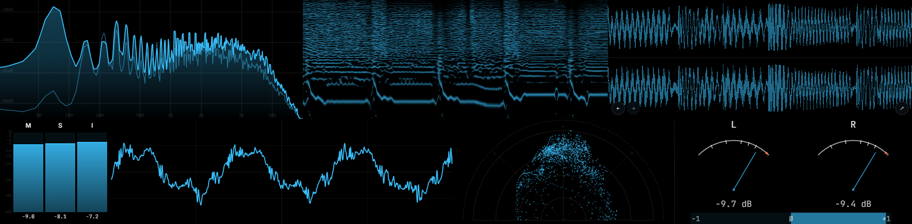
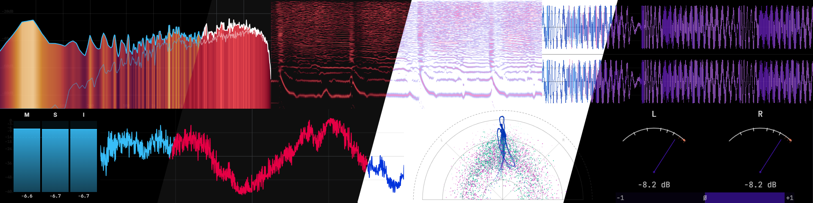

// SECTION_03 / STREAMERS
Chroma-ready out of the box.
Chroma key themes ship built in. Key the scopes out in OBS and drop them straight into your stream as transparent overlays. No masking, no compositing, no sweat.

Audio visualizer & meter rack
Prism taps into your system audio and runs it through a rack of real-time scopes and meters. Whether you're mixing a track, tuning a room, or just like watching your music, it's a window into what you're hearing.
Prism pulls audio at the OS level, straight from CoreAudio on macOS, WASAPI on Windows, or PulseAudio on Linux. No virtual cables or routing hacks. Flip on device input mode when you want to analyze a mic or a line-in instead.
A native C++ analysis engine does the math. What you see is what you hear.
Save the whole rack as a profile. What's visible, how it's laid out, per-scope settings, popout window positions, all of it. Keep separate setups for mixing, listening, and streaming. Share them around like presets.

Spectrum gradients, oscilloscope traces, vectorscope bands. Every color lives in an editable theme file. Build one in a text editor, drop it into the Themes folder, or grab something from the community.

Chroma key themes ship built in. Key the scopes out in OBS and drop them straight into your stream as transparent overlays. No masking, no compositing, no sweat.
If you're already running Astra, Prism talks to it over the local API. The Now Playing scope pulls cover art, track info, and playback controls, and sets them next to your meters.
Prism works fine on its own, too. Astra's just a nice sidecar.
Live track info and transport controls via the Astra local API. Loopback only, opt-in, disabled by default. Spotify is supported too on macOS and Windows.
Prebuilt binaries for Windows, macOS, and Linux on the releases page. Or build it yourself.
git clone https://github.com/Boof2015/prism.git cd prism npm install # compiles the native module npm run dev # development npm run dist # package for current platform